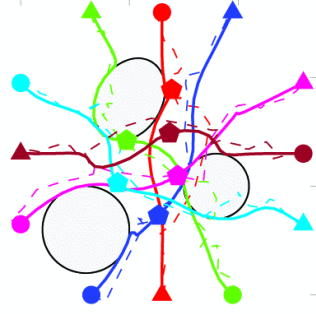

<div class='container'>
  <br>
  <br>
    <header class="masthead text-center">
      
      

      <p>
        <h1 style="font-size: 3.2em; font-weight: 600; letter-spacing: 0.5px; color: #000; margin: 0;">
          OptimalX Research Group
        </h1>
        
        <span style="display: block; margin-bottom: 3em"></span>

      <a href="https://github.com/OptimalX-Group"><i class="fa fa-github"></i> OptimalX-Group</a>&nbsp;&nbsp;&nbsp;
      <!-- <a href="https://twitter.com/KordingLab"><i class="fa fa-twitter"></i> KordingLab</a>&nbsp;&nbsp;&nbsp; -->
      <a href="mailto:yuey@umn.edu"><i class="fa fa-envelope-o"></i> yuey@umn.edu</a>
      </p>

      <div class="w3-container" style="   background: #f0f8ff; padding: 25px; border-radius:10px; border: 1px solid #5d8aa8">
        <div style="text-align:left">
          <h3> Recent News </h3>
          <u>Happenings of the last few months</u>
          <span style="display: block; margin-bottom: 1em"></span>
          <div class="news">
              {% capture now %}{{'now' | date: '%s' | minus: 47304000}}{% endcapture %}
              <ul style="list-style-position:outside;padding:20px" >
                {% for new in site.data.news %}
                  {% capture date %}{{new.date | date: '%s' | plus: 0}}{% endcapture %}
                  {% if date > now %}
                    <li>
                      <span>
                        <strong>[{{ new.date | date: "%b %Y" }}]</strong> {{ new.details }}
                      </span>
                    </li>
                  {% endif %}
                {% endfor %}
              </ul>
          </div>  
        </div >
      </div>


      <span style="display: block; margin-bottom: 3em"></span>


      <!-- <a class="twitter-timeline" href="https://twitter.com/KordingLab" data-widget-id="695051708246941697">Tweets by @KordingLab</a> -->
      <!-- <script>!function(d,s,id){var js,fjs=d.getElementsByTagName(s)[0],p=/^http:/.test(d.location)?'http':'https';if(!d.getElementById(id)){js=d.createElement(s);js.id=id;js.src=p+"://platform.twitter.com/widgets.js";fjs.parentNode.insertBefore(js,fjs);}}(document,"script","twitter-wjs");</script> -->

      <span style="display: block; margin-bottom: 3em"></span>
      Department of Aerospace Engineering and Mechanics at University of Minnesota Twin Cities<br>
      Room 305, Akerman Hall, 110 Union Street SE, Minneapolis, MN 55455
      <span style="display: block; margin-bottom: 3em"></span>

    </header>
</div>
